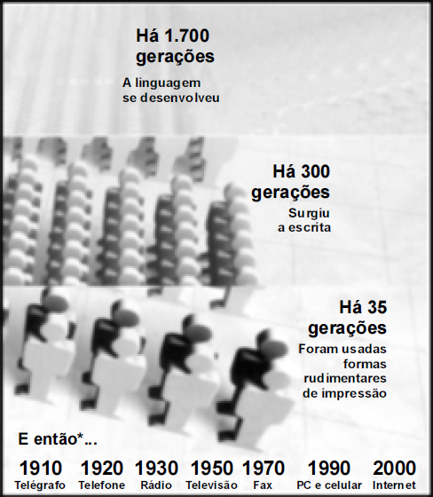

Entre o surgimento da linguagem humana e o da escrita,
sucederam-se 1.400 gerações. No intervalo de vida de uma geração,
cerca de vinte anos, novos paradigmas tecnológicos são inventados e
reinventados.
Veja Especial Tecnologia, set./2008, p. 52-3 (com adaptações).

Com base no fragmento de texto acima e no infográfico ao lado, desenvolva um
dos tópicos a seguir, de acordo com a habilitação do seu curso.
-
A BACHARELADO
Vantagens e desvantagens das diferentes tecnologias que permeiam as relações
entre oralidade e escrita, sob o ponto de vista, por exemplo, do editor, do tradutor
ou do revisor, abordando, necessariamente, os seguintes aspectos:
-
o aumento da complexidade dos saberes envolvidos;
-
os recursos de acesso e disponibilidade de informação.
-
B LICENCIATURA
Vantagens e desvantagens das diferentes tecnologias que permeiam as relações entre oralidade e escrita, sob o ponto
de vista da prática pedagógica, abordando, necessariamente, os seguintes aspectos:
- o aumento da complexidade dos saberes envolvidos;
- as implicações para o ensino-aprendizagem de língua.